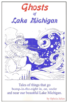

*This book must be ordered via the publisher. Please contact Quixote Press at 1-800-571-2665 to purchase.
*This book must be ordered via the publisher. Please contact Quixote Press at 1-800-571-2665 to purchase.
Title: Ghosts of Lake Michigan
Author: Ophelia Julien
Published By: Quixote Press
Book Description: Tales of things that go bump-in-the-night in, on, under and near our beautiful Lake Michigan.
Contact Ouixote Press to purchase:
3544 Blakslee Street
Wever IA 52658
1-800-571-2665